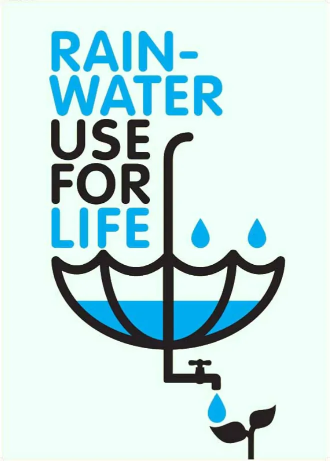

!------------ What is rainwater harvesting ? ------------!
The saline water from the sea gets evaporated due to the heat from the sun, forms clouds and falls as rain as
freshwater. A significant part of this rainwater drains out into oceans and drains. If we are able to harness this effectively,
it can be an important source which can be used for various applications. So, in short, rainwater harvesting is the process of storing rainwater
for reusing rather than allowing it to run off. However, it is vital to understand the steps of rainwater harvesting before that.